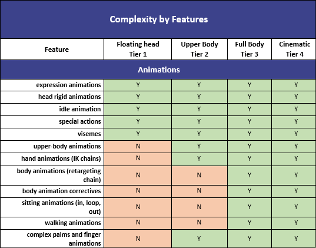
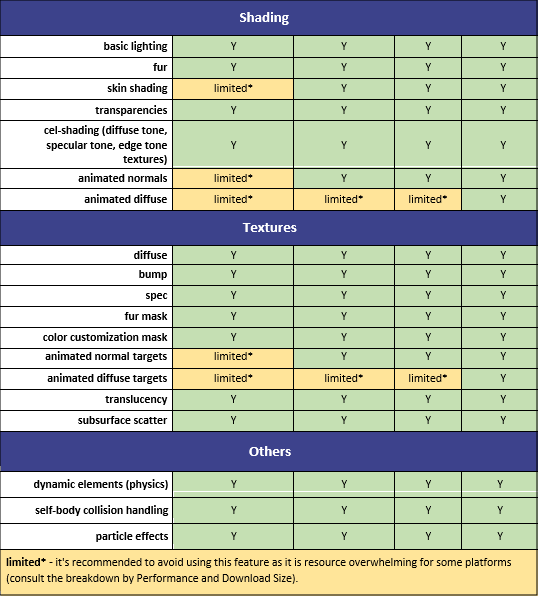
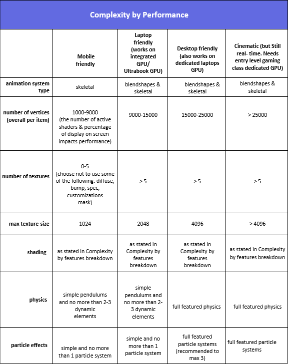
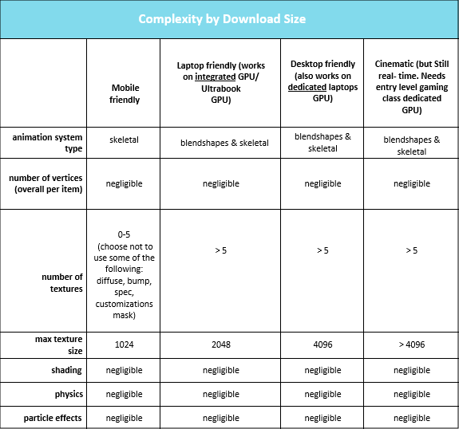

アバターの複雑性のティア
3Dアバターから開始しましょう。
3Dアバターモデルと小道具には、異なる数のポリゴンの面があります。オブジェクトの詳細度が高いほど（ハイポリモデル）、表示とアニメーションに必要な計算能力が高くなります。
.avatarを含むファイルには複数のアバターコンテンツを保管できることをお忘れなく。もちろん、Animazeの.avatarコンテナファイルにあるものは、ほとんどは3Dキャラクター/アバターですが、小道具（帽子、メガネなど）、バックドロップ（3D/2D）、2Dアバター（現在Live2D技術を使用）、またはハイブリッドアバターも保管することができます。
想定しているアバターの使用方法（たいていの場合はモバイルやデスクトップでのフェイスカメラ）により、複雑さの度合いが異なります。作業を簡単にするために、3Dアバター用にいくつかの複雑さの度合いのティアを定義しています：




2Dと3Dワールドの組み合わせで構成されるハイブリッドアバターと呼ばれる追加のアバターティアがあります。詳細な情報はこちらをご覧ください。
重要な変更が発生し、一般に公開する必要がある場合は、この資料を定期的に更新します。